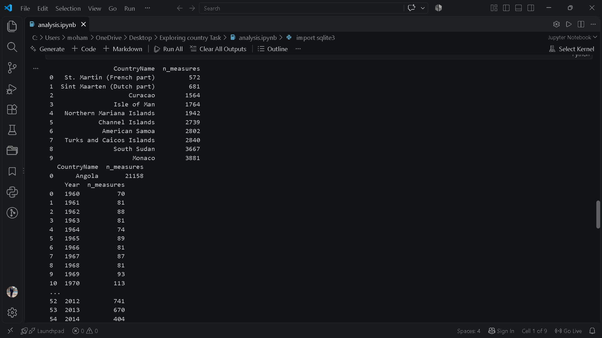
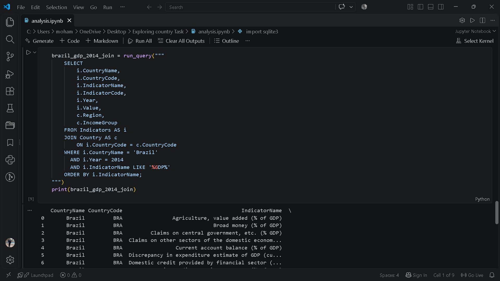
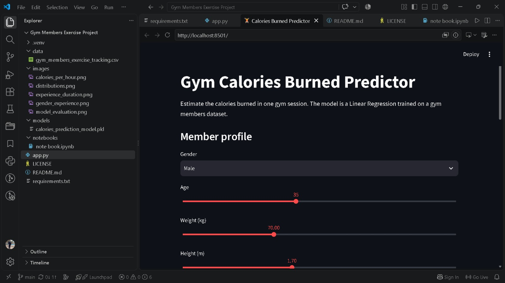
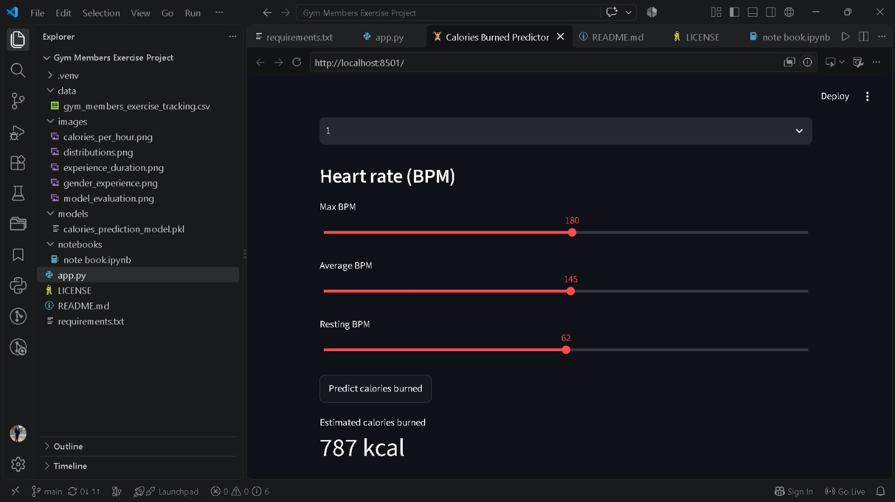

Python
Python-based data workflows, automation, and analysis.
Data Analyst | Data Scientist | ML Engineer
Alexandria, Egypt
Communication Engineering student turning raw data into insights — building my foundation in Python, SQL and machine learning through hands-on projects and continuous learning.
I'm Mohamed Naser, a Communication Engineering student with a strong interest in Data Science and Artificial Intelligence. I enjoy working with data, exploring patterns, and turning raw information into meaningful insights that can support better decision-making.
I have a foundation in Python, SQL, and data science concepts, and I'm continuously developing my skills through coursework, hands-on projects, and practical learning. My engineering background helps me approach problems analytically, while my curiosity drives me to explore new technologies and improve my technical abilities.
I'm currently focused on expanding my knowledge in data analysis, machine learning, and AI, while building projects that help me gain real-world experience and grow as a data science professional.
My goal is to use data to solve problems, discover insights, and create practical solutions through continuous learning and experimentation.
Practical data-focused services built around clean analysis, useful insights, and machine learning.
Python-based data workflows, automation, and analysis.
Explore datasets, identify patterns, and turn data into insights.

Prepare messy datasets for reliable analysis and modeling.

Create clear charts and visual stories from complex data.
Collect structured information from websites for analysis.
Build and evaluate practical predictive machine learning models.
Technical and professional skills I use to build data-driven solutions.
Projects that show how I apply data analysis, visualization, and machine learning in practice.
A data analysis project that ingests World Development Indicators from CSV files into a structured SQLite database to run SQL queries and analyze global economic and demographic metrics.
Tools: Python, pandas, sqlite3


A Data Science and Machine Learning project that analyzes gym members' exercise data and predicts calories burned per workout session using regression models.
Skills: Python, Pandas, NumPy, Matplotlib, Seaborn, Scikit-learn, Joblib, EDA, Data Cleaning, Regression


6-month Digital Egypt Pioneers Initiative track, currently underway.
Elmadina Higher Institute for Engineering and Technology.
Thanks for stopping by.
Let's create something impactful with data. 📊